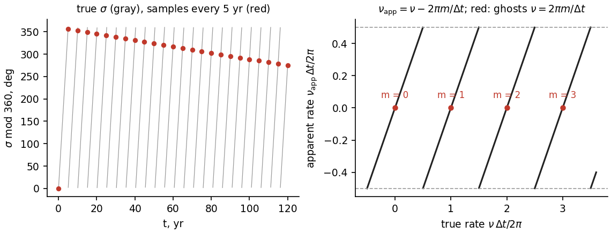
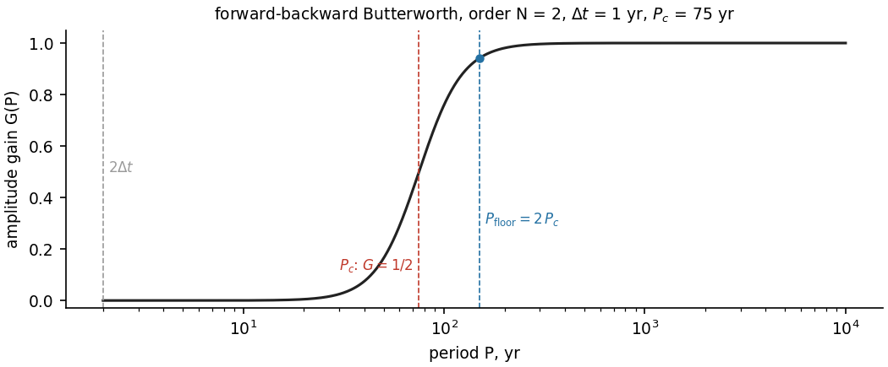

From the integration to the angle¶
The integration saves the elements of the body and of the planets every \(\Delta t\) years. Before anything can be said about libration, three questions must be answered: can this step follow the angle at all, which part of the signal is the libration, and is the answer stable when the filter changes? This page describes these steps for a mean-motion resonance; secular and Lidov-Kozai angles use their own cutoff (Secular and Lidov-Kozai). The dry-run applies the same rules to the initial elements, before the integration starts.
The angle and its rate¶
The angle \(\sigma\), its rate model \(\nu(a)\) and the exact resonance \(a_*\), where \(\nu(a_*) = 0\), are defined on The resonant pendulum. Here \(\nu(a)\) is used only to predict how far the angle turns between two saved points; whether \(\dot\sigma\) really follows it is tested later (Is it this resonance?).
\(\sigma \bmod 2\pi\) is exact at every saved point. What can go wrong is the count of whole turns between two points, and the presence of short-period terms that the step cannot resolve.
What the output step can resolve¶
Question: between two saved points, does the angle turn by less than half a revolution? Only the \(\lambda\) part of \(\sigma\) can turn fast; \(\varpi\), \(\Omega\) and the planets' slow angles are sampled exactly. If the angle turns by \(\nu\Delta t\) per step, the sampled series cannot distinguish \(\nu\) from \(\nu - 2\pi m/\Delta t\) for any integer \(m\). The alias branch and the apparent rate are (Knežević & Milani 2000, §2.2, p. 22)
The step is judged over the range of \(a\) the body visits (its 1st to 99th percentile):
smp_verdict |
condition | meaning |
|---|---|---|
resolved |
\(\lvert\nu\rvert\Delta t \le\) MMR_STEP_RESOLVED_DEG = 90° everywhere |
the step follows the angle |
marginal |
\(\lvert\nu\rvert\Delta t \le 180°\), branch \(m = 0\) | followed, with little margin |
aliased_unambiguous |
one branch \(m \ne 0\) | a circulation the step folds; its true rate is known |
ambiguous |
several branches | the step cannot tell the rate |
Two derived numbers help to read an aliased record:
- the ghost: the semi-major axis \(a_m\) where branch \(m\) looks like an exact resonance, \(\nu(a_m) = 2\pi m/\Delta t\). A body near \(a_m\) shows an almost stationary sampled angle, a perfect imitation of a libration;
- the Nyquist half-width: the offset from \(a_*\) at which \(\sigma\) turns by \(\pi\) per step. With \(\lvert c\rvert = 3\lvert k\rvert n/(2a)\),
Threshold. An aliased circulation (circulation, subtype alias) is non_resonant with reason alias only
when the branch is unique and the body is far from the resonance: a libration needs
\(\dot\sigma \simeq c\,(a - a_*)\) to change sign, so the slow \(a\) must reach \(a_*\). The far ratio is
where \(a(\dot\lambda)\) is the semi-major axis that the measured mean motion implies. Several branches, or one branch
close to \(a_*\), cannot exclude a libration hidden by the step: the verdict is invalid / alias with
action = resample and a suggested step (resample_step_yr).
Counting the turns: the predictive unwrap¶
numpy.unwrap adds, at each step, the increment of smallest modulus; at an aliased step that is the wrong one. The
package unwraps by the rate model instead, separately for the fast and the slow part of the angle. Write
\(\sigma = \psi_\lambda + s\), with \(s = p\varpi + v\Omega + \sum_j(p_j\varpi_j + v_j\Omega_j)\) the slow part. The
longitude part \(\psi_\lambda = (\sigma - s) \bmod 2\pi\) is unwrapped with the rate model without the slow rate:
with \(\operatorname{wrap}\) into \([-\pi, \pi)\) and \(\nu_\text{slow}\) the mean rate of the slow part measured on the record
(column ctx_slow_rate_arcsec_yr). The slow part is then put back with its own winding: the body's
\(\varpi\) takes its turns from the low-passed eccentricity vector \(\operatorname{LP}[e\,e^{i\varpi}]\) (band
MMR_JITTER_BAND_YR), not from the osculating \(\varpi\), so that fast loops of the eccentricity vector around zero
insert no spurious slow turns. If a planet's slow element needed by \(s\) was not saved, the full angle is unwrapped
with the full \(\nu\). The residual of the \(\lambda\) part measures how well the model predicts every step. Question: can the record be stitched? Yes when its 99th percentile is
\(\le\) MMR_UNWRAP_MAX_RESID_P99_DEG = 45° and its largest value \(\le\) MMR_UNWRAP_MAX_RESID_DEG = 135°.
Otherwise the angle is undefined / alias and the verdict invalid. Where the eccentricity passes near zero,
\(\varpi\) itself can turn by up to \(\pi\) between two points at any step; this is not an alias (flag
varpi_fast_low_e). Question: is the phase defined at all? The verdict is invalid / undefined_phase when
three things hold together: the perihelion jitter \(\lvert p\rvert\,\delta e/\bar e\) exceeds MMR_JITTER_MAX_RAD =
0.785 rad, the full angle fails the residual limits above, and \(\varpi\)'s own scatter about the low-passed vector
\(e\,e^{i\varpi}\) exceeds that limit on more than MMR_VARPI_UNDEFINED_MAX_SHARE = 0.5 of the record. The jitter
alone, with \(\varpi\) defined, is only a flag and the cap jitter_low_e (at most medium).

The cutoff: what is libration and what is noise¶
Question: which periods can a libration of this angle have? The filtered angle \(\sigma_f\) must keep every libration and remove the short-period terms: the orbital period and the synodic periods with the planets of the angle, \(P_{\text{syn},j} = 2\pi/\lvert n - n_j\rvert\) (\(2\pi/(n + n_j)\) for a retrograde orbit, with \(n, n_j > 0\)). The cutoff period is
with the factors MMR_FILTER_SYNODIC_FACTOR = 1.5 and MMR_FILTER_ORBIT_FACTOR = 1.5 (a convention), the body's
own period \(P_\text{orb} = 2\pi/n(\langle a\rangle)\) and the divisor FILTER_MIN_LIBRATION_CUTOFFS = 2
(flt_cutoff_binding names the bound that sets \(P_c\)).
The orbit bound is there because heliocentric elements osculate about \(GM_\odot\) alone, while a body moves about the Sun and the planets inside its orbit, of mass \(\varepsilon M_\odot\) (\(\varepsilon \approx 1.34\times10^{-3}\) for Jupiter to Neptune). From the energy integral, \(1/a_\text{osc} = (1+\varepsilon)/a - 2\varepsilon/r\), so \(a\) (and \(\lambda\)) carry a wave at the body's own \(P_\text{orb}\) of half-amplitude \(\approx 2\varepsilon e a\): measured 0.126 au for 15874 (0.128 predicted), 0.038 au for 523683 (0.038). An inner body has \(P_{\text{syn},j} > P_\text{orb}\) with every outer planet, and so has an outer body inside the planet's 1:2, so the orbit bound acts only beyond a 1:2 (\(P_\text{orb} > P_{\text{syn},j}\)): TNOs and Centaurs against Uranus or Neptune. Without it the synodic bound let that wave through as libration cycles (523683 2U-9, 379 yr). Barycentric elements would remove the wave at its source; they change \(a\) and every angle and are a separate study. \(P_\text{floor}\) is the shortest libration the angle may have:
MMR_LIBRATION_PERIOD_MIN_YR= 150 yr for every MMR except the 1:1. This is a convention, not a physical minimum. Faster "episodes" are treated as forced waves of nearby commensurabilities. Hence \(P_c = 75\) yr whenever the synodic periods are below 50 yr;- for a co-orbital (1:1) angle,
MMR_COORBITAL_PERIOD_FLOOR_FACTOR= 0.5 times the linear tadpole period of the planet, \(P_\text{orb}/\sqrt{27\mu/4}\) (Murray & Dermott 1999, eq. 3.151, p. 94): 147.8 yr for Jupiter, giving \(P_\text{floor} = 73.9\) yr and \(P_c = 36.9\) yr; 222 yr for the Earth. The planet of a 1:1 angle does not enter the synodic bound: its synodic angle is the resonant angle itself. A quasi-satellite librates faster than a tadpole; when the orbit-averaged angle stays in the quasi-satellite well long enough, the record is analyzed again with the floor set by the period of that well (rule G1q). A horseshoe that turns close to the planet is faster than a tadpole too: a run whose turning points, read on the orbit-averaged angle, all reflect on a top of the averaged potential (the planet's or L3's) gets its own floor, 0.5 times the period of the loop through those turns, provided its local 1:1 law has \(K/K_\text{th} > 0\) (rulecoorbital_floor_profile, pendulum; 2003 YN107: a 103-yr cycle turning 2° from the Earth, loop 119 yr, floor 59 yr instead of 111 yr). Other runs keep the tadpole floor. The cutoff stays the tadpole floor's; what the prominence counts as fast is what is faster than the shortest floor any run can get, 0.5 times the fastest horseshoe loop turningMMR_COORBITAL_MIN_TURN_HILL= 3 Hill radii from the planet (at most the tadpole floor; Earth, circular: 57 yr), else the horseshoe itself raised the prominence over its own swing (YN107: 233°); - a two-body angle (not 1:1) keeps 150 yr, but a cycle below it can still be accepted by a second pass at the floor of
its own averaged potential, \(T_{0,\text{th}}/\sqrt{x}\) (\(x\) =
MMR_STRENGTH_CHECK_RATIO), when the theory, the center and L4 confirm it (rule G1f, status tree);preprocess.profile_period_flooris the shared hook (the 1:1 floor is the run's own loop above; three-body angles keep 150 yr).
A short run counts as a near-episode (the confidence cap near_episode) when its period is at least its floor times
\(1 - b\), \(b\) = CONFIDENCE_THIN_BAND = 0.1, for every MMR: a run within the thin margin of the floor is a thin miss
of an episode too.
MMR_FILTER_CUTOFF_YR overrides the rule. The output step does not enter \(P_c\): as in the classical proper-element
filters, the band is set by the physics, and the filter is applied before any decimation
(Nesvorný & Morbidelli 1998, §2, p. 3030; Knežević & Milani 2000, §2.2, pp. 22–23).
The filter¶
\(\sigma\) (unwrapped, with its linear trend removed and put back afterwards, so the number of turns is kept) and \(a\)
are low-passed by a Butterworth filter of order \(N\) = FILTER_ORDER = 2, applied forward and backward. The
forward-backward pass has zero phase shift and the steady-state amplitude gain
\(G(P_c) = 0.5\) exactly. In the small-step limit \(G(2P_c) \approx 0.94\) and \(G(P_c/1.5) \approx 0.165\): where the
floor sets \(P_c\), the shortest libration keeps 94 % of its amplitude, and the synodic terms, at most \(P_c/1.5\), keep
at most 16.5 %. At a finite step the digital expression is sharper (for \(\Delta t = P_c/3\), \(G(2P_c) = 81/82\));
the analysis uses it. The filter's edges spread over
about \(P_c\); turning points and everything measured on them are taken in the window
\([t_0 + P_c,\ t_1 - P_c]\) (FILTER_EDGE_TRIM_CUTOFFS = 1).
When the planets' longitudes are saved, the planets' own slow inequalities (the 900-yr Jupiter–Saturn great inequality) enter \(\sigma\) linearly through \(\sum_j k_j\lambda_j\) and are subtracted exactly before filtering.
The ripple in detail
\(\sigma_\text{clean} = \sigma - \sum_j k_j\,\delta\lambda_j^\text{slow}\) (MMR_RIPPLE_REMOVE, band
MMR_RIPPLE_BAND_YR). Without saved planets the flag ripple_not_removed is set and the predicted ripple raises
the turning-point prominence (What the angle does). A co-orbital angle keeps its
planet's longitude as it is: the body follows the planet's slow longitude.

Can the record be filtered at all?¶
Question: does a filter with this cutoff exist at this step? A digital low-pass needs its cutoff above the
Nyquist period, \(P_c > 2\Delta t\). If \(P_c \le 2\Delta t\) the verdict is invalid / undersampled before anything
is measured, with action = resample at a round step from MMR_RESAMPLE_STEPS_YR that keeps
MMR_RESAMPLE_STEPS_PER_CYCLE = 20 samples per shortest libration. For an ordinary MMR this happens at
\(\Delta t \ge 37.5\) yr; for a Jupiter Trojan at \(\Delta t \ge 18.5\) yr.
Is the libration itself shaped by the filter?¶
Question: does the filter keep the observed libration? If the gain at the measured libration period is below
MMR_L8_GAIN_FULL = 0.94 read with the thin band CONFIDENCE_THIN_BAND of its ratio (0.911: roughly
\(P_\text{cyc} < 1.8P_c\), as the period floor is read at × 0.9; 2001 WK15 32E-39, 143 yr at \(P_c\) = 75 yr), the shape of the libration (its amplitude, center and
energy) is partly the filter's. The flag filter_too_slow is set and the checks that read the shape are
not_measured: the identity L3, the force law L4 and the amplitude check B1 of the response, both potential checks R0,
one pendulum, and the margins L2 (separatrix distance), L5 and L6 (center shift). A margin that already failed or does
not apply keeps its value; the numbers themselves stay in the output.
A shorter cutoff for a slow libration: the scale ladder (G2c)¶
Question: is the center scale itself hiding the libration's cycles? The center scale \(W_c\)
(geometry) trims \(W_c\) from each end of the record. For a slow libration
(\(P_\text{slow}\) comparable to the record) the trimmed window may hold fewer than LIBRATION_CENTRE_MIN_ESTIMATES = 2
slow periods, so the tree sees one cycle where the record holds two. Then shorter cutoffs are tried,
\(P_\text{slow}\) being the libration's period at \(W_c\) (from its phase return when it closes only one cycle) and
\(P_\text{fast}\) the shortest full period of the fine turning points (the fast wave: at \(3P_\text{fast}\) the filter
keeps \(G \approx 0.012\) of it; the factor is LIBRATION_CENTRE_CYCLES). Walking down, a rung holds while its turning
points at the center prominence \(p_c\) agree, in their common window, with those at \(W_c\) and at the rung above: the
same number and kind, each within MMR_SCALE_TP_TIME_TOL = 0.1 \(P_\text{slow}\). The shortest rung that holds is taken
when it shows more slow extrema than \(W_c\), and its verdict is kept when it again decides libration (columns
geo_scale_ladder_*, rule scale_ladder). With neither the force law L4 nor R0 with \(a\) measured there, only the
directly averaged strength supports it: the cap slow_scale_provisional holds it at medium; a record of
\(\ge 5.25\,P\) decides.
385533 in 7N−12 (100 kyr): at \(W_c\) = 22.7 kyr only the extrema at 44.8 and 67.6 kyr remain (one cycle closed by its
phase return, \(P\) = 45.4 kyr; uncertain). \(P_\text{fast}\) = 1.95 kyr (the residual's spectral peak, 3°), so the
ladder stops above 5.85 kyr; at 7.95 kyr four extrema 19.5–89.5 kyr agree with \(W_c\) within 0.004 \(P\), F by direct
averaging passes (\(T_{0,\text{th}}\) 33.9–36.8 kyr against 34.4 kyr observed): resonant, medium. The other G2c rows
of the benchmark hold 1.5–8.5 slow periods in their window (136108, 15875, TX9) or find no libration at the rung
(182223) and keep \(W_c\).
Short periods folded by the step¶
Question: do the short-period terms of the elements fold into slow, fake lines? A step at or above half the shortest of the orbital and synodic periods,
folds those terms to low frequencies, \(\lvert m/P - \operatorname{round}(m\Delta t/P)/\Delta t\rvert\), where no
filter of the record can remove them. Below that step the same happens when a harmonic \(m \le\)
MMR_SHORT_PERIOD_HARMONICS = 2 of \(P_\text{orb}\) or \(P_{\text{syn},j}\) folds to a period longer than the
shortest libration. Either case sets the flag short_period_aliased. How much of the folded terms reaches
\(\sigma_f\) and \(a_f\) depends on their amplitude, which the record cannot measure. The folded lines move
\(\sigma_f\) little, but they enter \(a_f\), and the checks that read \(a\) (the identity and the force law). Hence:
- the full tree caps every record with the flag at
medium(capshort_period_aliased, inv2_verdict); the minimal policy keeps it as a flag only (Confidence); - except a plain geometric circulation (reason
circulationoraliaswith no forced-wave runs): it reads neither the identity nor the force law, so the flag stays and the cap does not apply (MMR_SHORT_PERIOD_CAP_CIRCULATION= False); - the record itself never lifts the cap (
MMR_SHORT_PERIOD_CAP_RATIO= 0; a positive value enables an opt-in lift); - the record gets
smp_fold_free_step_yr, the largest step ofMMR_RESAMPLE_STEPS_YRbelow its own at which nothing folds (sampling.fold_free_step). When the cap is what holds the confidence down (confidence.cap_binds), the action isresampleat that step.
The same test (sampling.short_period_trigger) is the dry-run's predicate.
The scatter of \(a\) at short periods against the libration's own swing of \(a\) (smp_da_sp_over_a_excursion) above
MMR_SHORT_PERIOD_A_RATIO = 0.5 sets the warning flag a_short_period_scatter. On a folding step with that much
scatter, a failed identity or force law is read as not_measured (not as a failure) when the strength of the
directly averaged potential passes (MMR_SHORT_PERIOD_A_UNMEASURED = True); a failure never becomes a pass.
Smoothing for derivatives¶
\(\dot\sigma\) and \(\dot a\) multiply whatever leaks through the filter by \(P_\text{cyc}/P_\text{syn}\). The response of \(a\) (Is it this resonance?) is therefore read after a second smoothing at
with the fraction MMR_RESPONSE_CUTOFF_CYCLES = 0.1. When \(0.1\,P_\text{cyc}\) sets this cutoff and the step is
small, the libration and its harmonics up to the fifth keep \(G \ge 0.94\) of their amplitude. When \(P_c\) is larger, it
sets the bandwidth: harmonic \(m\) keeps \(G(P_\text{cyc}/m)\) at cutoff \(P_c\). The energy and the separatrix zone read the angle at \(\max(P_c,\ 0.2\,P_\text{cyc})\)
(SEPARATRIX_CUTOFF_CYCLES = 0.2).
The ×2 filter guard¶
Question: would a slightly heavier filter tell a different story? A forced wave that \(P_c\) lets through makes turning points and stalls of its own; a filter twice as long damps it, while a real libration with \(G(P_\text{cyc}) \ge 0.94\) survives. The decisive numbers are measured again at \(2P_c\) on the interval both filters see, on the episode the status rests on and its counterpart at \(2P_c\) (the episode that overlaps it most in time):
| quantity | changed when | setting |
|---|---|---|
| turning points | the counts differ by more than \(\max(2,\ 0.1 N)\), or one full cycle appears or vanishes | MMR_FILTER_GUARD_TP_ABS = 2, MMR_FILTER_GUARD_TP_REL = 0.1 |
| episode | not reproduced, or its start or end moves by more than one libration period | MMR_FILTER_GUARD_BOUNDARY_PERIODS = 1 |
| stalls | appear or vanish | — |
| energy \(h\) (median per cycle) | crosses \(h = 1\), or changes by more than \(0.1\max(1, \lvert h\rvert)\) | MMR_FILTER_GUARD_H_TOL = 0.1 |
| shape | the largest half-amplitude changes by more than 20 %, or the amplitude or center-shift check flips | MMR_FILTER_GUARD_AMP_REL = 0.2 |
The energy and the shape are compared only when \(2P_c\) itself keeps the libration (\(G \ge 0.94\)). A change sets the
flag filter_sensitive and empties the checks that read the changed quantity. The guard runs before the status
tree: a passed energy check (the pendulum test R0 with \(a\)) that the guard withdraws is not_measured for the tree
too (column flt_withdrawn_before_tree), so the withdrawal can change the branch the tree takes. A failed check stays
an objection: the guard never turns a failure into support.
Worked example: 1999 UQ in 7E+2M−9¶
The near-Earth asteroid 1999 UQ (\(a = 1.094\) au, \(e = 0.016\)) was integrated for 20 kyr and saved twice, every 5.0012 yr and every 1 yr. The angle \(\sigma = 7\lambda_E + 2\lambda_M - 9\lambda\) turns at \(\nu \approx 72°\)/yr, once every 5.0 yr; the exact resonance is at \(a_* = 1.0760\) au.
| step 5.0012 yr | step 1 yr | |
|---|---|---|
| turn per step \(\lvert\nu\rvert\Delta t\) | 354°–365° | 71°–73° |
branch \(m\), smp_verdict |
1, aliased_unambiguous |
0, resolved |
| apparent rate | ≈ 0°/yr (−0.004°/yr measured) | 72°/yr |
revolutions in 20 kyr: numpy.unwrap / predictive |
−0.16 / 3998.8 | 3998.9 / 3998.9 |
| ghost \(a_1\) | 1.094176 au, \(4\times10^{-6}\) au from \(\langle a\rangle\) | — |
| Nyquist half-width \(\delta a_N\) | 0.0093 au | 0.046 au |
| far ratio | 66 | 66 |
| verdict | non_resonant / circulation (alias), reason alias, certain |
non_resonant / circulation, reason circulation, certain |
At the 5-yr step the record is a stroboscope: the body sits on the ghost of branch 1, and the plainly unwrapped
angle stands almost still for 20 kyr. The step verdict (one branch) and the far ratio (the body is 66 of its own
\(a\) swings from \(a_*\)) prove that this is a circulation folded by the step, so the verdict is non_resonant /
alias, not invalid. Both steps fold the orbital period (\(P_\text{orb} = 1.14\) yr, so \(\Delta t \ge 0.57\) yr) and
carry the flag short_period_aliased, but as plain circulations they are not capped. The fold-free step of this
record is 0.5 yr. Both figures are in the Gallery.